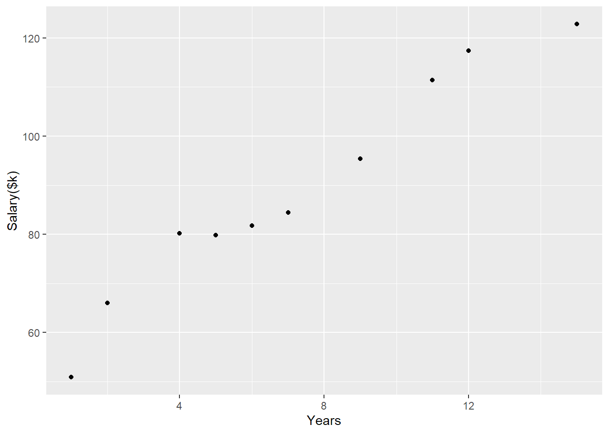
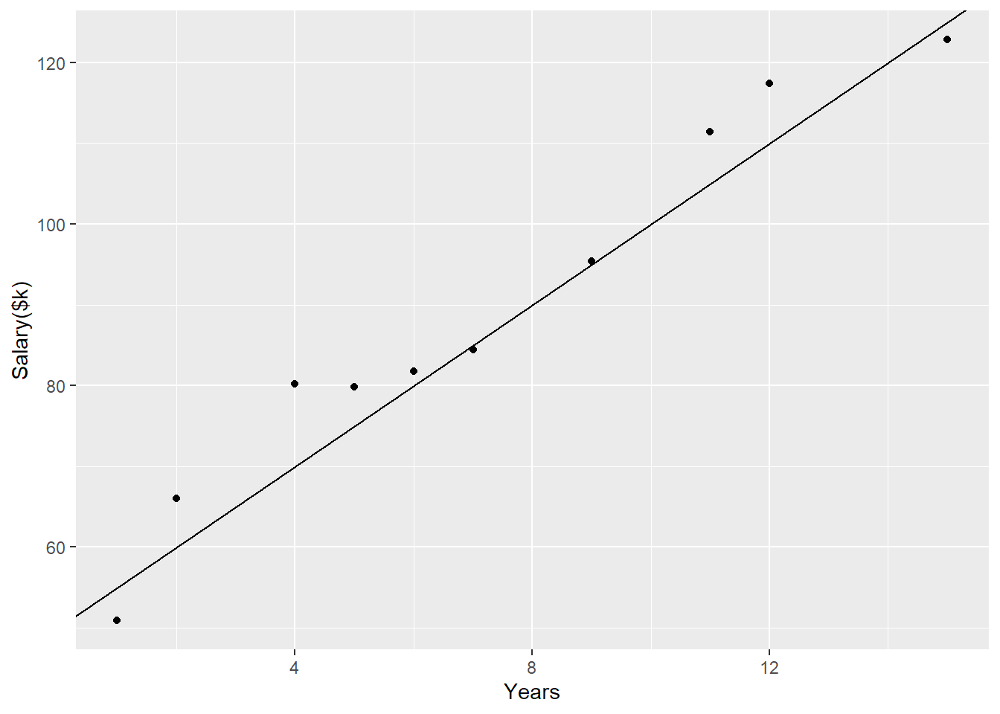

x <- c(15,6, 9, 11,2, 7, 4, 5, 12,1)
x [1] 15 6 9 11 2 7 4 5 12 1Regression analysis models how a response variable (\(Y\)) depends on one or more predictors (X). Linear regression assumes that there is a linear relationship between \(X\) and \(Y\) That is, that we can express Y as X multiplied by and added to some constant values (\(\beta\)). For example, with one predictor variable we have a ‘simple linear regression’:
\[Y \approx \beta_0 + \beta_1 X\].
Here the two constants, \(\beta_0\) and \(\beta_1\), tell us about the relationship between X and Y. Specifically, \(\beta_0\) tells us what Y looks like when \(X=0\), and \(\beta_1\) tells us how much Y changes when X increases by 1.
to make this more concrete, lets look at a basic example.
You’ve been offered a job at ~company A~, and want to predict your salary at this company after working there for 10 years. Say we have records for 10 employees at a company, including their time working at the company. These values, in years are:
x <- c(15,6, 9, 11,2, 7, 4, 5, 12,1)
x [1] 15 6 9 11 2 7 4 5 12 1Our aim in this example is to predict the salary of each participant \(Y_i\).
We know that everybody starts at this company at a base salary of $50,000, and every year they stay employed they get a pay rise of - on average - $5000.
Using this information, we can construct a simple linear model of salary from employment time. Given an employment time of \(X_i\) years, we can represent a employee’s expected salary (\(\hat{Y}_i\)) mathematically as
\[ \hat{Y}_i= \$50,000 + \$5,000\cdot X_i. \]
lets compute these expected values for our 10 employees
y_hat <- 50 + 5*x
y_hat [1] 125 80 95 105 60 85 70 75 110 55and look at a plot of this data
library(ggplot2)
ggplot(cbind('Years employed'=x, "Predicted salary($k)"= y_hat), aes(`Years employed`, `Predicted salary($k)`))+
geom_point()
The relationship between \(X\) and \(\hat{Y}\) is perfectly linear - for an employee of \(X_i\) years, we can calulate \(\hat{Y}_i\) using the linear equation above. Note that this applies not just to our sample of 10 employees, but to any other employee at the company - like yourself.
For example, an 11th employee has been working at the company for 8 years, his expected salary will therefore be \(\hat{Y}_{11}= \$50,000 + \$5,000\cdot8 = \$90,000\).
calculate (using R) your expected salary after working for this company for 10 years
Evaluating our linear equation across the range of X, gives us a straigth line with y-intercept $50k and slope of $5k/year.
ggplot(cbind('Years employed'=x, "Predicted salary($k)"= y_hat), aes(`Years employed`, `Predicted salary($k)`))+
geom_point()+
geom_abline(intercept= 50, slope=5)
But what is \(\hat{Y}\)? it is the predicted salary based on the ‘average’ rate of pay rise each year. The actual pay rise varies from individual to individual, year to year, based on factors we don’t have information about (e.g. job performance, time-off, good luck).
Thankfully, we have data on the actual salary of these employees too. Lets have a look:
y <- (50 + 5*x + rnorm(10, mean=0, sd=4)) |> round(1)
y [1] 122.8 81.8 95.4 111.4 66.0 84.4 80.2 79.8 117.4 50.9ggplot(cbind('Years'=x, "Salary($k)"= y), aes(Years, `Salary($k)`))+
geom_point()
Overlaying our linear model from before,
ggplot(cbind('Years'=x, "Salary($k)"= y), aes(Years, `Salary($k)`))+
geom_point()+
geom_abline(intercept= 50, slope=5)
We can see that our predictions were not always (in fact, never exactly) correct, however our simple linear equation does fairly well at characterising the general relationship between the length of employment and (actual) salary.
A second company also has a job available. Base salary on start is higher here at $70,000, but payrises are less - you are told that on average employees working for the company for 5 years have $20,000 higher salary than when they started. We want to construct a simple linear model to estimate Salary at company 2 after X years of employment.
\[ Y_i = \beta_0 + \beta_1 X_i + \varepsilon_i \]
What are the coefficients \(\beta_0\) and $beta_1 in this case?